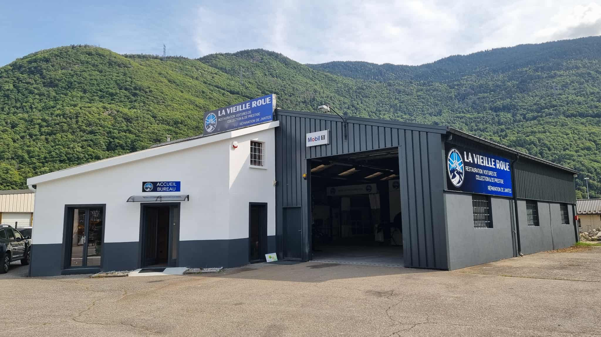

<script type="application/ld+json">
{
  "@context": "https://schema.org",
  "@type": "LocalBusiness",
  "name": "La Vieille Roue",
  "description": "Spécialiste jantes Savoie - Rénovation et réparation de jantes à Albertville",
  "url": "https://lavieilleroue.fr",
  "telephone": "04 79 32 60 63",
  "email": "lavieilleroue@gmail.com",
  "address": {
    "@type": "PostalAddress",
    "addressLocality": "Albertville",
    "addressRegion": "Savoie",
    "postalCode": "73200",
    "addressCountry": "FR"
  },
  "geo": {
    "@type": "GeoCoordinates",
    "latitude": "45.6759",
    "longitude": "6.3926"
  },
  "openingHours": "Mo-Fr 08:00-18:00",
  "priceRange": "€€",
  "serviceArea": {
    "@type": "GeoCircle",
    "geoMidpoint": {
      "@type": "GeoCoordinates",
      "latitude": "45.6759",
      "longitude": "6.3926"
    },
    "geoRadius": "50000"
  },
  "hasOfferCatalog": {
    "@type": "OfferCatalog",
    "name": "Services jantes Savoie",
    "itemListElement": [
      {
        "@type": "Offer",
        "itemOffered": {
          "@type": "Service",
          "name": "Rénovation jantes Savoie",
          "description": "Rénovation et réparation de jantes aluminium et alliage"
        }
      },
      {
        "@type": "Offer",
        "itemOffered": {
          "@type": "Service",
          "name": "Dévoilage jantes",
          "description": "Redressage de jantes voilées"
        }
      },
      {
        "@type": "Offer",
        "itemOffered": {
          "@type": "Service",
          "name": "Peinture jantes personnalisée",
          "description": "Personnalisation et peinture de jantes"
        }
      }
    ]
  },
  "areaServed": [
    "Savoie",
    "Haute-Savoie", 
    "Isère",
    "Albertville",
    "Chambéry",
    "Annecy"
  ],
  "keywords": ["jantes savoie", "rénovation jantes", "jantes albertville", "réparation jantes savoie"]
}
</script>
<section class="w-full h-[75vh] bg-cover bg-center relative overflow-hidden p-5"
    style="background-image: url('/assets/images/automobile-8217167_1280.png');" role="banner"
    aria-label="Présentation de La Vieille Roue">
    <div class="absolute inset-0 bg-background-dark bg-opacity-70 flex items-center p-4 md:p-8">
        <div class="text-center text-text-light max-w-5xl mx-auto z-10">
            <h1 class="text-4xl text-accent sm:text-5xl md:text-7xl font-extrabold mb-6 leading-tight font-k2d drop-shadow-lg opacity-0"
                data-animate="fade-in">
                La Vieille Roue
            </h1>
            <p class="text-lg md:text-2xl mb-8 opacity-90 font-jakarta" data-animate="fade-in-up" data-delay="100">
                Basée à <strong>Albertville</strong>, au cœur de la <strong>Savoie</strong>, l'équipe de La Vieille Roue
                est votre spécialiste de la <strong>rénovation de jantes pour professionnels</strong> et particuliers,
                ainsi que de la <strong>restauration de véhicules de collection, de prestige et young timers</strong>.
                Nous
                redonnons vie aux légendes sur roues avec passion et expertise.
            </p>
            <nav class="flex flex-wrap gap-3 md:gap-6 justify-center" aria-label="Navigation principale">
                <a href="#jantes-section"
                    class="mt-10 bg-accent hover:bg-accent-hover text-primary-dark font-bold py-3 px-8 rounded-full shadow-xl text-xl transition duration-300 transform hover:scale-105 inline-block font-k2d opacity-0"
                    data-animate="fade-in-up" data-delay="200" aria-label="Découvrir la réparation de jantes">
                    Rénovation de Jantes
                </a>
                <a href="#restauration-section"
                    class="mt-10 bg-accent hover:bg-accent-hover text-primary-dark font-bold py-3 px-8 rounded-full shadow-xl text-xl transition duration-300 transform hover:scale-105 inline-block font-k2d opacity-0"
                    data-animate="fade-in-up" data-delay="200"
                    aria-label="Découvrir la restauration de véhicules anciens">
                    Restauration Véhicules Anciens
                </a>
            </nav>
        </div>
    </div>
</section>

<section id="jantes-section" class="container mx-auto py-16 px-4 md:px-8 text-text-dark"
    aria-labelledby="jantes-heading">
    <h2 id="jantes-heading"
        class="text-4xl sm:text-5xl font-extrabold mb-8 text-text-dark text-center font-k2d opacity-0"
        data-animate="fade-in-up">
        <strong>Jantes Savoie</strong> : Rénovation et Réparation à Albertville
    </h2>

    <div class="grid grid-cols-1 md:grid-cols-2 gap-12 items-center text-justify">
        <div class="order-2 md:order-1 col-span-2">
            <!-- Mise à jour pour inclure les images dans le texte -->
            <p class="mb-6 leading-relaxed text-lg font-jakarta opacity-0" data-animate="fade-in-up" data-delay="100">
                Votre parc automobile professionnel ou votre véhicule personnel mérite l'excellence. <strong>La Vieille
                    Roue à Albertville</strong> est votre partenaire idéal pour tous vos besoins de <strong>jantes Savoie</strong>.
                Notre équipe est spécialisée dans la <strong>rénovation de jantes</strong> en <strong>Savoie</strong>.
                Expert reconnu en <strong>jantes Savoie</strong>, nous redonnons vie à vos jantes en aluminium ou en alliage, qu'elles soient abîmées par le temps, les
                chocs ou la corrosion. Après un <strong>diagnostic précis</strong> réalisé dans notre atelier
                d'<strong>Albertville</strong>, nous vous offrons une solution de réparation sur mesure, alliant
                performance et durabilité, au tarif le plus juste.

                
                Nous comprenons les exigences des professionnels de l'automobile et nous nous engageons sur des délais
                rapides pour minimiser l'immobilisation de vos véhicules.
            </p>
            <p class="mb-6 leading-relaxed text-lg font-jakarta opacity-0" data-animate="fade-in-up" data-delay="200">
                Situé au cœur de la <strong>Savoie</strong>, notre atelier spécialisé est le sanctuaire où vos jantes
                retrouvent leur splendeur et leur robustesse. Nous utilisons des méthodes et des équipements à la pointe
                de l'innovation pour toutes les étapes de la <strong>réparation de jantes</strong>, de la restauration à
                la personnalisation. Que ce soit pour un <strong>redressage de jantes voilées</strong>, une
                <strong>réparation de fissures</strong>, l'<strong>élimination de la corrosion</strong>, ou une nouvelle
                <strong>peinture de jantes personnalisée</strong>, nous avons la solution.
                
            </p>
            <p class="mb-6 leading-relaxed text-lg font-jakarta opacity-0" data-animate="fade-in-up" data-delay="300">
                Que vos jantes aient besoin d'une simple rénovation esthétique ou d'une intervention plus complexe, nous
                avons la solution.
                Notre expérience nous permet de vous proposer un
                plan d'action clair et personnalisé, assurant une qualité de finition exemplaire. Avec nos services,
                vous prolongerez significativement la durée de vie de vos jantes. Spécialistes <strong>jantes Savoie</strong>, chez La
                Vieille Roue, nous ne réparons pas seulement des jantes, nous restaurons la confiance dans la stabilité
                et l'esthétique de votre véhicule.
                
                Référence en <strong>jantes Savoie</strong>, nous desservons <strong>Albertville, Chambéry, Annecy</strong>,
                et tout le secteur Savoie - Haute-Savoie.
            </p>
            <a href="/jantes"
                class="mt-8 bg-primary-medium hover:bg-primary-dark text-text-light font-bold py-3 px-8 rounded-full shadow-lg transition duration-300 transform hover:scale-105 inline-block font-k2d opacity-0"
                data-animate="fade-in-up" data-delay="400" aria-label="En savoir plus sur la rénovation de jantes">
                Découvrez la rénovation de jantes
            </a>
        </div>
    </div>
</section>
<section class="container mx-auto py-16 px-4 md:px-8">
    <h3 class="text-3xl font-bold text-center mb-4">Exemples de rénovation</h3>
    <p class="text-lg text-center mb-8">Rénovation de jantes d'une <strong>Clio Williams</strong></p>

    <div class="relative w-full max-w-4xl mx-auto overflow-hidden rounded-2xl shadow-2xl">
        <!-- Conteneur avec ratio 16/9 -->
        <div class="relative pt-[56.25%]">
            <!-- Slider -->
            <div id="slider-clio" class="absolute inset-0 flex transition-transform duration-500">
                
                
                
                
                
                
                
            </div>
        </div>

        <!-- Boutons navigation -->
        <button onclick="prevClio()" aria-label="Image précédente"
            class="absolute left-4 top-1/2 -translate-y-1/2 bg-black/40 hover:bg-black/60 text-white p-3 rounded-full shadow-lg transition">
            ◀
        </button>
        <button onclick="nextClio()" aria-label="Image suivante"
            class="absolute right-4 top-1/2 -translate-y-1/2 bg-black/40 hover:bg-black/60 text-white p-3 rounded-full shadow-lg transition">
            ▶
        </button>
    </div>
</section>
<script>
    const sliderClio = document.getElementById("slider-clio");
    const totalSlidesClio = sliderClio.children.length;
    let indexClio = 0;

    function showSlideClio() {
        sliderClio.style.transform = `translateX(-${indexClio * 100}%)`;
    }

    function nextClio() {
        indexClio = (indexClio + 1) % totalSlidesClio;
        showSlideClio();
    }

    function prevClio() {
        indexClio = (indexClio - 1 + totalSlidesClio) % totalSlidesClio;
        showSlideClio();
    }
</script>
<section id="restauration-section"
    class="relative flex items-center justify-center text-text-light text-center px-4 md:px-8 py-6 md:py-24 text text-justify"
    style="
            background-image: url('/assets/images/porsche-8343861_1280.jpg');
            background-attachment: fixed;
            background-size: cover;
            background-position: center;
        " aria-labelledby="restauration-heading">
    <div class="absolute inset-0 bg-background-dark bg-opacity-75"></div>
    <div class="relative z-10 max-w-4xl mx-auto py-12 md:py-20">
        <h2 id="restauration-heading"
            class="text-4xl md:text-5xl text-center font-extrabold mb-8 font-k2d leading-tight opacity-0"
            data-animate="fade-in-up">
            <strong>Restauration de Véhicules de Collection, de Prestige et Young Timers</strong> à <strong>Albertville
                en
                Savoie</strong>
        </h2>
        <p class="text-lg md:text-xl leading-relaxed mb-6 font-jakarta opacity-0" data-animate="fade-in-up"
            data-delay="100">
            Chez La Vieille Roue, notre passion va au-delà du métier. C'est un engagement total pour la préservation du
            patrimoine automobile. À Albertville, nous redonnons leur splendeur et leurs performances d'origine aux
            véhicules de collection, de prestige et young timers. Chaque projet, d'une 2 CV à une Porsche 911 GT3 RS,
            est traité avec le respect qu'il mérite.
        </p>
        <p class="text-lg md:text-xl leading-relaxed mb-6 font-jakarta opacity-0" data-animate="fade-in-up"
            data-delay="200">
            Notre atelier est équipé des derniers outils pour répondre aux exigences les plus pointues. Nos techniciens
            qualifiés sont des artisans experts en carrosserie automobile. Nous nous engageons à
            vous offrir un travail d'une qualité irréprochable et un service personnalisé, de la simple réparation à la
            réfection complète du moteur.
        </p>
        <p class="text-lg md:text-xl leading-relaxed mb-8 font-jakarta opacity-0" data-animate="fade-in-up"
            data-delay="300">
            Que votre automobile nécessite une restauration totale ou partielle, notre mission est de préserver son
            histoire tout en garantissant sa pérennité. Confiez-nous votre passion : nous en prendrons soin avec la
            nôtre, depuis notre atelier d'Albertville, au service de toute la Savoie et au-delà.
        </p>
        <a href="/restauration"
            class="mt-8 bg-primary-medium hover:bg-primary-dark text-text-light text-center font-bold py-3 px-8 rounded-full shadow-lg transition duration-300 transform hover:scale-105 inline-block font-k2d opacity-0"
            data-animate="fade-in-up" data-delay="400" aria-label="En savoir plus sur la rénovation de jantes">
            Découvrez la restauration de véhicules
        </a>
        <a href="#contact-section" target="_blank"
            class="mt-8 bg-accent hover:bg-accent-hover text-primary-dark text-center font-bold py-3 px-8 rounded-full shadow-lg transition duration-300 transform hover:scale-105 inline-block font-k2d opacity-0"
            data-animate="fade-in-up" data-delay="600" aria-label="Demander un devis personnalisé pour la restauration">
            Demandez un devis personnalisé
        </a>
    </div>
</section>

<!-- <section class="hidden container mx-auto py-16 px-4 md:px-8 bg-background-light text-text-dark"
        aria-labelledby="temoignages-heading">
        <h2 id="temoignages-heading" class="text-4xl sm:text-5xl font-extrabold mb-12 text-primary-dark text-center font-k2d opacity-0"
            data-animate="fade-in-up">
            Les Voix de Notre Savoir-Faire en <strong>Savoie</strong>
        </h2>
        <div class="grid grid-cols-1 md:grid-cols-3 gap-8">
            <div class="bg-white p-6 rounded-lg shadow-xl border border-neutral-medium testimonial-card-hover transition-all duration-300 opacity-0"
                data-animate="fade-in-up" data-delay="200" role="region" aria-label="Témoignage de Jean Dupont">
                <p class="italic mb-4 text-lg font-jakarta">
                    "Un travail incroyable sur mes jantes à <strong>Albertville</strong> ! Ma voiture est comme neuve, même mieux qu'à l'origine. Le souci du détail est impressionnant."
                </p>
                <p class="font-semibold text-primary-dark font-k2d">- Jean Dupont, Client satisfait en Savoie</p>
            </div>
            <div class="bg-white p-6 rounded-lg shadow-xl border border-neutral-medium testimonial-card-hover transition-all duration-300 opacity-0"
                data-animate="fade-in-up" data-delay="300" role="region" aria-label="Témoignage de Marie Curie">
                <p class="italic mb-4 text-lg font-jakarta">
                    "Professionnalisme et passion se rencontrent ici. Je recommande chaudement La Vieille Roue pour toute <strong>rénovation de jantes professionnelles</strong> ou <strong>restauration de véhicule ancien</strong> dans la région d'<strong>Albertville</strong>."
                </p>
                <p class="font-semibold text-primary-dark font-k2d">- Marie Curie, Cliente professionnelle</p>
            </div>
            <div class="bg-white p-6 rounded-lg shadow-xl border border-neutral-medium testimonial-card-hover transition-all duration-300 opacity-0"
                data-animate="fade-in-up" data-delay="400" role="region" aria-label="Témoignage de Pierre Gauthier">
                <p class="italic mb-4 text-lg font-jakarta">
                    "L'équipe est à l'écoute et le résultat est au-delà de mes espérances. Une véritable œuvre d'art sur roues ! Mon véhicule de collection est sublimé par leur atelier d'<strong>Albertville</strong>."
                </p>
                <p class="font-semibold text-primary-dark font-k2d">- Pierre Gauthier, Collectionneur automobile</p>
            </div>
        </div>
    </section> -->

<section id="contact-section" class="py-16 px-4 md:px-8 text-center text-text-light relative overflow-hidden"
    aria-labelledby="contact-heading">
    <div class="absolute inset-0 bg-primary-dark opacity-20 transform -skew-y-3 scale-110"></div>
    <div class="relative z-10 max-w-4xl mx-auto opacity-0" data-animate="fade-in-up">
        <h2 id="contact-heading" class="text-4xl md:text-5xl font-extrabold mb-6 font-k2d leading-tight">
            Votre <span class="text-accent">Véhicule d'Exception</span> Mérite l'Excellence
        </h2>
        
        <p class="text-lg md:text-xl mb-10 font-jakarta opacity-90">
            À<strong> Albertville, en Savoie</strong>, nous sommes votre expert local pour la <strong>rénovation de
                jantes</strong> et la <strong>restauration automobile</strong>. Contactez-nous dès aujourd'hui pour
            discuter de votre projet et bénéficier de notre savoir-faire unique dans la région <strong>Savoie, Isère et
                Haute-Savoie</strong>.
        </p>
        <div class="flex flex-col sm:flex-row justify-center gap-6">
            <a href="tel:0479326063"
                class="bg-accent hover:bg-accent-hover text-primary-dark font-bold py-4 px-10 rounded-full shadow-2xl text-xl transition duration-300 transform hover:scale-105 inline-flex items-center justify-center space-x-2 font-k2d"
                aria-label="Appeler La Vieille Roue pour un devis">
                <span class="icon-phone" aria-hidden="true"></span>
                <span>Appelez-nous : 04 79 32 60 63</span>
            </a>
            <a href="mailto:lavieilleroue@gmail.com"
                class="bg-primary-medium hover:bg-primary-dark text-text-light font-bold py-4 px-10 rounded-full shadow-2xl text-xl transition duration-300 transform hover:scale-105 inline-flex items-center justify-center space-x-2 font-k2d"
                aria-label="Envoyer un e-mail à La Vieille Roue">
                <span class="icon-mail" aria-hidden="true"></span>
                <span>Envoyez un e-mail</span>
            </a>
        </div>
    </div>
</section>

<script>
    document.addEventListener('DOMContentLoaded', () => {
        const animateElements = document.querySelectorAll('[data-animate]');

        const observer = new IntersectionObserver((entries, observer) => {
            entries.forEach(entry => {
                if (entry.isIntersecting) {
                    const element = entry.target;
                    const animationType = element.dataset.animate;
                    const delay = element.dataset.delay ? parseInt(element.dataset.delay) : 0;

                    setTimeout(() => {
                        element.classList.remove('opacity-0');
                        element.classList.add(`animate-${animationType}`);
                    }, delay);
                    observer.unobserve(element); // Arrête d'observer une fois l'animation déclenchée
                }
            });
        }, { threshold: 0.1 }); // Déclenche l'animation quand 10% de l'élément est visible

        animateElements.forEach(element => {
            element.classList.add('opacity-0'); // Cache l'élément au chargement
            observer.observe(element);
        });
    });
</script>